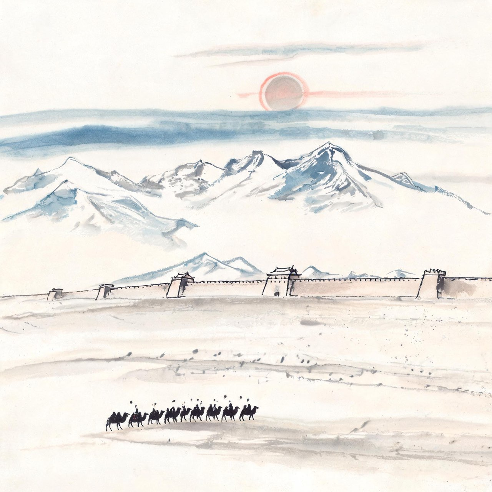

李白 · 701-724
蜀中
少年与出蜀

碎叶来客
长安元年，西域碎叶城。万里之外的中原，皇座上坐着一个女皇帝。这座安西都护府治下的边城，迎来一个男婴的啼哭。
他的父亲名叫李客。「客」这个字很奇怪——不像名字，更像一种身份：客居者。李家不缺钱，却对来历讳莫如深。你的父亲是谁，你的祖先是谁，你问过，没有人回答。
五岁那年，全家收拾行装，沿天山脚下的商道东行，穿过河西走廊，落脚在绵州昌隆县的青莲乡。西域的风沙留在身后，蜀中的青山迎面而来。
你在蜀地长大，说蜀地的话，读中原的书。可那片看过的雪山戈壁，后来都变成了你的诗。
注
- 出生地三说并存：碎叶说（主流，郭沫若《李白与杜甫》考订）、蜀中说、条支说，此处取碎叶说
- 李客之名与家世：见李阳冰《草堂集序》、范传正《唐左拾遗翰林学士李公新墓碑并序》，家世详情史无明文，'讳莫如深'为演绎
- 青莲乡为宋代后起地名，唐属绵州昌隆县，此处从今名
事件·五岁诵六甲
青莲乡的孩童在私塾里摇头晃脑，你坐在其中，却是读得最快的那一个。
五岁诵六甲，十岁观百家——这是你后来自己写下的句子。六甲是干支之学，百家是诸子文章。蜀中的读书人一辈子的功课，你十年就翻完了。
乡间还流传另一个故事：你读书遇到瓶颈，逃学下山，溪边遇见一位老妪，正拿一根铁杵在石头上磨。你问磨它做什么，老妪说：磨成针。
你愣在原地，转身回了山上。
注
- '五岁诵六甲，十岁观百家'为李白自述，信史级
- 铁杵磨针：笔记传说，正史无载；传说地望在眉州象耳山（祝穆《方舆胜览》），移用于青莲乡仅取其少年心性之意
- 场景年份取约数（705-710 间），表以 706
戴天山中
十几岁时，你隐居到大匡山中读书。山里有座大明寺，晨钟暮鼓，与你做伴的是经卷和剑。
白天读书，你也不忘学剑。蜀地多任侠之风，你的剑术据说在小一辈中数一数二——这话是你自己说的，没人敢验证。
某个春日，你沿着溪水进戴天山，去找山上修行的道士。犬吠声混在流水里，桃花沾着露水。树深处时时瞥见鹿群，走到正午，溪边却听不见寺里的钟声——道士不在。
你怅然下山。那天的失望，被你写成了一首诗。多年后人们说，这是李白存世最早的作品之一。
注
- 大匡山在江油县北大匡山下（今江油市大康镇），与青莲乡同县，故 place 归青莲乡
- 从赵蕤学纵横术：见《唐诗纪事》引《彰明逸事》，赵蕤著《长短经》，李白从学岁余——系年约718-720
- 剑术'数一数二'：出自李白《与韩荆州书》'十五好剑术'自述，'没人敢验证'为演绎
事件·天才英丽
开元八年，益州长史苏颋到任。这是从宰相任上外放来的大人物，文章天下知名。
二十岁的你带着诗卷去谒见。放在别的少年身上，这是一次唐突；放在你身上，是一次豪赌。
苏颋读完，对僚属说：此子天才英丽，下笔不休，虽风力未成，且见专车之骨——若广之以学，可以相如比肩也。
意思是：才华已经够了，差的是学问的厚度。继续读，你能赶上司马相如。
你把这句话记了一辈子。这是第一个拿你的未来打赌的人，赌注是天下文名。
注
- 苏颋原话见李白《上安州裴长史书》自述，属信史级
- '拿未来打赌'为叙事演绎
二十四岁这年秋天，你决定出蜀。行囊里有一柄剑、几卷诗、满脑子的天下。船从清溪出发，半轮秋月悬在头顶，影子落进江水里，跟着你走——
峨眉山月歌
峨眉山月半轮秋，影入平羌江水流。
夜发清溪向三峡，思君不见下渝州。
注
- 峨眉山月歌：峨眉山—平羌江—清溪—三峡—渝州，四句五地名
- 明·王世贞评此诗'二十八字中有峨眉山、平羌江、清溪、三峡、渝州，使后人为之，不胜痕迹'，后世视为绝唱
- 出蜀年份取724说（开元十二年），另有725说